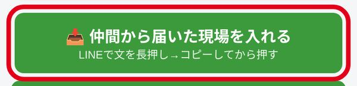

2 LINEで届いた現場を入れる
1LINEの青い字のリンクを押す
邸名のトークに、仲間からこういう文が届きます。
📲【山田邸】11/15更新
▼押すとアプリに入ります
https://nyujo.genba-benri.com/#z=6ikLUcf2…
⚠ 入場は8時以降
▼押すとアプリに入ります
https://nyujo.genba-benri.com/#z=6ikLUcf2…
⚠ 入場は8時以降
2「はい、アプリに入れる」を押す
Safariでアプリが開き、この枠が出ます。押せば終わりです。

うまくいかないとき
LINEで文を長押し→「コピー」→ アプリの「📥 仲間から届いた現場を入れる」→（iPhoneは「ペースト」）→「はい」
LINEで文を長押し→「コピー」→ アプリの「📥 仲間から届いた現場を入れる」→（iPhoneは「ペースト」）→「はい」

3練習してみる
押すと、練習用の現場「練習邸」が入ります（場所と駐車場は本物、電話と注意事項は架空。電話はつながりません）。邸名を押すとカードが開きます。注意事項の札（押すと全文）、「🚗 現場へナビ」（進入路の地図が出ます）、「🅿 駐車場」を押してみてください。終わったら一番下の「削除」。
📲 練習の現場を入れてみる